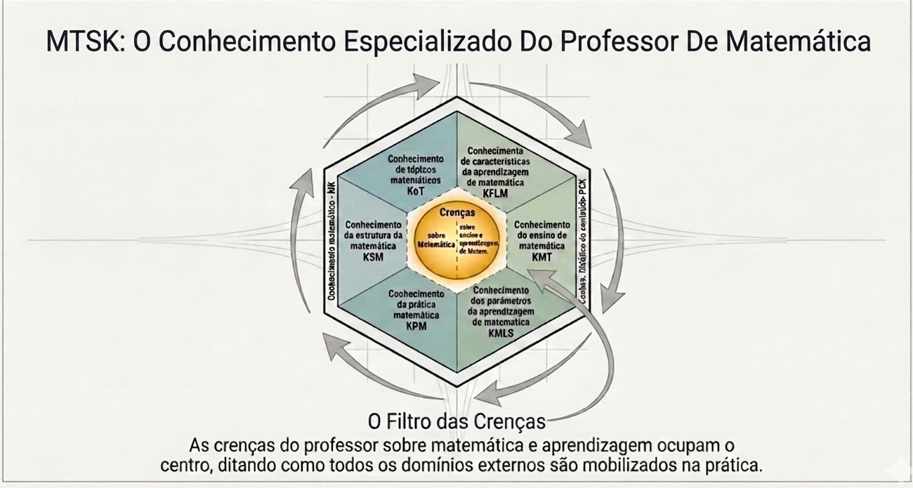
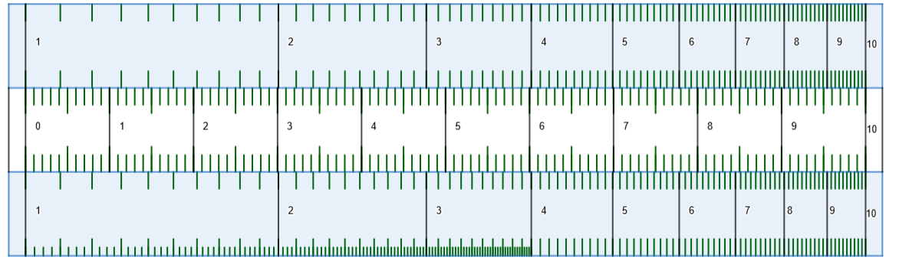
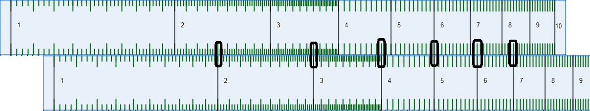
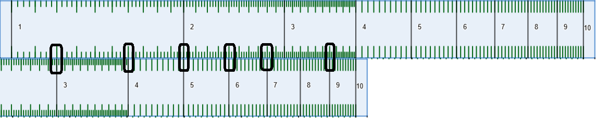
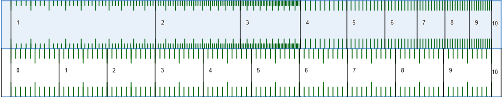

Um Curso de Extensão para a Licenciatura em Matemática
Wesley Oliveira Brum
Orientadora: Profa. Dra. Daniela Mendes Vieira da Silva
Coorientador: Prof. Dr. Marcello Montillo Provenza
Rio de Janeiro, 2026
Foco: superar o viés procedimental e recuperar a construção de significado.
"Que conhecimentos especializados do professor de matemática devem ser mobilizados para o ensino de logaritmo no Ensino Médio, e de que modo um curso de extensão para licenciandos pode promover a reflexão crítica sobre essas dimensões do saber docente?"
Articulação entre caracterização do saber docente e proposição de espaço formativo.
Objetivo Geral: Caracterizar, com base no MTSK, os conhecimentos especializados para o ensino de logaritmos e desenvolver um curso de extensão para licenciandos.
Objetivos Específicos:

Conhecimento da disciplina em si, sob a ótica de quem ensina.
Conhecimento sobre como ensinar e aprender matemática.
Influenciam todas as categorias, dando sentido às ações pedagógicas e filtrando a mobilização dos subdomínios.
Conhecimento da disciplina sob a ótica de quem ensina.
Conhecimento sobre como ensinar e aprender.
| Capítulo da Dissertação | Módulo do Produto | Atividade-Chave |
|---|---|---|
| Cap. 3 (História) | Módulo 1 | Tábuas de Napier/Briggs & Régua de Cálculo |
| Cap. 4 (Função Inversa) | Módulo 2 | Aproximações Sucessivas para 2ˣ=5 |
| Cap. 5 (Área Hiperbólica) | Módulo 3 | Somas Trapezoidais & L(ab)=L(a)+L(b) |
| Cap. 8 (Análise Variacional) | Módulo 4 | Modelagem do Resfriamento do Café (GeoGebra) |
| Cap. 6 (BNCC/Cálculo) | Módulo 5 | Lei de Kleiber, Benford, Richter & C-14 |
A história da Matemática não é um mero adereço ou curiosidade: no modelo MTSK, ela integra o Conhecimento dos Tópicos (KoT). Compreender a gênese, a evolução e os usos sociais de um conceito é parte fundamental do saber docente especializado, pois permite ao professor explicar não apenas como se opera, mas por que e para que o conhecimento foi criado.
Criados por John Napier (1614) e aperfeiçoados por Henry Briggs (logaritmos decimais), os logaritmos foram a resposta à necessidade premente de simplificar cálculos astronômicos, náuticos e comerciais no Renascimento. Johannes Kepler declarou que a invenção “dobrou a vida dos astrônomos”, ao transformar multiplicações em somas. A régua de cálculo materializou essa ideia por mais de três séculos.
A matemática não é um conhecimento pronto e acabado, mas uma construção histórica e social, resultado das necessidades humanas e do desenvolvimento cultural das civilizações. Essa visão está alinhada à BNCC, que preconiza o letramento matemático baseado na compreensão da matemática como linguagem viva e cultural, desenvolvendo competências como argumentação, investigação e apreciação da ciência.
A história da matemática é um recurso didático potente para humanizar a disciplina e combater o formalismo vazio. No MTSK, esse saber alimenta o KMT (estratégias contextualizadas) e o KFLM (antecipação de obstáculos), além de dialogar com o KMLS (alinhamento à BNCC). O professor que domina a história dos logaritmos pode construir sequências que partem da necessidade do conceito antes de sua formalização algébrica.

Sob a perspectiva histórica, a régua de cálculo, materializou as tábuas de logaritmos em um instrumento físico que funcionou como "computador analógico"por quase quatro séculos. Tecnicamente, seu funcionamento baseia-se em escalas logarítmicas de espaçamento variável, onde o ato físico de deslizar as réguas realiza a adição de comprimentos, transformando visualmente operações de multiplicação em soma através da propriedade fundamental log(a⋅b)=loga+logb . Na Atividade 1.2 do produto educacional, esse instrumento é ressignificado didaticamente para conectar o registro algébrico ao geométrico, permitindo que o futuro professor vivencie a lógica computacional dos logaritmos de forma concreta e tangível.



"A definição de logaritmo como expoente só faz sentido pleno quando se tem uma teoria satisfatória das potências de expoente real, o que exige o conceito de limite."
(LIMA, 2001)No Ensino Fundamental, apresenta-se: "O expoente é o número de vezes que a base aparece na multiplicação". Essa definição funciona para 2³, mas colapsa diante de:
"A potenciação é a operação que, para expoentes naturais, representa a multiplicação repetida da base, mas que se estende para outros números como uma transformação de escala contínua."
Vamos provar que log2 5 não é racional usando o Teorema Fundamental da Aritmética (fatoração única).
1. Suponha que log2 5 = p/q (racional, com p, q inteiros).
2. Pela definição de logaritmo: 2p/q = 5.
3. Elevando ambos os lados à potência q:
2p = 5q
4. Contradição: O lado esquerdo (2p) é um número par, enquanto o lado direito (5q) é ímpar. Um número par jamais pode ser igual a um ímpar.
Logo, log2 5 não é racional.
Problema disparador: encontrar o expoente x tal que 2x = 5.
A transformação geométrica T(x, y) = (kx, y/k) preserva a área ao ser aplicada nos pontos de polígonos sob a hipérbole.
Clique no botão abaixo para abrir a aplicação em tela cheia e manipular o valor de k.
T(t) = T_amb + (T₀ - T_amb)e⁻ᵏᵗ
KMT Tecnologia & KSM Discreto ↔ Contínuo
🎯 Crenças: Transformação de "transmissor de conteúdo" para "mediador reflexivo".
🙏 À Profa. Dra. Daniela Mendes Vieira da Silva e ao Prof. Dr. Marcello Montillo Provenza pela orientação.
👩🏫 Aos membros da Banca Examinadora pela disponibilidade e contribuições.
🤝 Aos companheiros do grupo "Me Salva Profmat" (Anderson, Ângelo, Jeffesson e Lígia) pelo apoio e pelas risadas nos momentos de tensão.
❤️ À minha família, pela paciência e incentivo constante.
"Esta dissertação é nossa!"
Muito obrigado.